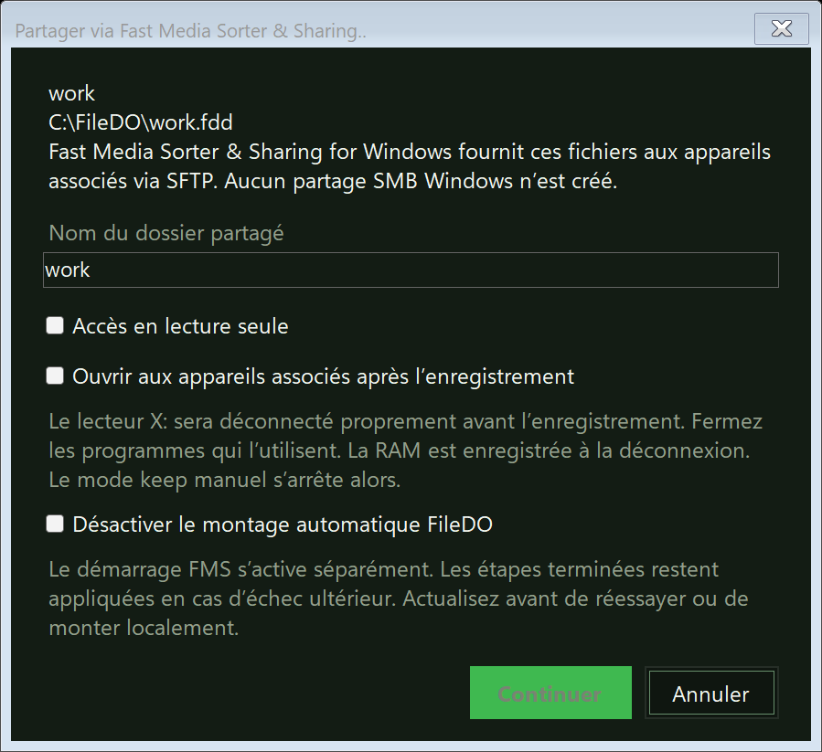

Un disque FileDO sur le téléphone : partage via Fast Media Sorter & Sharing
FileDO peut servir un disque virtuel .fdd à vos téléphones et tablettes associés - non pas seul, mais par l’intermédiaire de Fast Media Sorter & Sharing for Windows : vous enregistrez le disque dans le Gestionnaire de disques, et ce programme fournit ses fichiers en SFTP aux appareils qui lui sont associés. FileDO n’ouvre lui-même aucune connexion réseau pour cela - il dialogue avec ce programme par un canal local (pipe) sur cet ordinateur. Ci-dessous : ce qu’il faut au préalable, comment partager un disque, ce que voient les téléphones, et que faire quand la boîte de dialogue indique que le partage est indisponible. Les disques eux-mêmes font l’objet du guide des disques virtuels.
1. Ce qu’il faut au préalable
Trois choses : la version de bureau de FileDO, Fast Media Sorter & Sharing for Windows avec son composant FileDO facultatif activé, et au moins un appareil associé.
FileDO, la version de bureau
Le disque doit être enregistré dans le Gestionnaire de disques comme conteneur .fdd sur fichier. La version du Microsoft Store ne peut pas monter de disques, et ce flux de travail y est fermé - utilisez la version de bureau. L’installation et ce que l’installateur écrit sont décrits dans le guide d’installation.
Fast Media Sorter & Sharing for Windows
Le programme qui fournit les fichiers sur le réseau. Pendant son installation, activez le composant FileDO facultatif - sans lui, le partage de disques est indisponible. Son installateur de bureau n’est pas signé, si bien que Windows peut afficher le même avertissement que pour FileDO - cet avertissement est expliqué ici. La page d’installation est serzhyale.github.io/FastMediaSorter_Lite.
Appareils associés
Les téléphones et tablettes sont associés à ce programme dans son Share Manager - de la même façon que pour les dossiers partagés ordinaires. Un appareil que vous n’avez pas associé ne verra pas le disque. Pour le téléphone, un disque partagé ressemble à un dossier de plus, pas à une technologie à part.
2. Partager un disque depuis le Gestionnaire de disques
Démarrez Share Manager. Fast Media Sorter & Sharing est le détenteur d’un disque partagé, son Share Manager doit donc être lancé avant que FileDO puisse en proposer un. Si son worker ne répond pas, FileDO propose une nouvelle vérification - un worker indisponible ne prouve pas que le programme est absent.
Choisissez le disque et l’action. Dans le Gestionnaire de disques, sélectionnez un disque sur fichier enregistré et choisissez Partager via Fast Media Sorter & Sharing.. dans son volet de détails ou dans le menu Plus (Ctrl+Shift+S).
Vérifiez les choix d’enregistrement. Le nom du dossier est ce que voient les appareils associés ; l’accès est en lecture et écriture par défaut, vous pouvez cocher « Accès en lecture seule », et un disque sealed reste en lecture seule. Vous pouvez aussi ouvrir le disque tout de suite. Si le disque est monté localement, FileDO le déconnecte proprement après votre confirmation ; si le montage automatique FileDO est activé, accepter de le désactiver fait obligatoirement partie du transfert.
Lisez la confirmation. Elle réunit tout ce qui va se passer : le montage local est désactivé, et ce programme fournit sur le réseau les fichiers du disque ouvert. Un disque chiffré demande son mot de passe - une seule fois, ici, sur cet ordinateur.
Plus tard, fermez ou arrêtez.Fermer le disque partagé conserve l’enregistrement - le disque peut être rouvert en une étape. Arrêter le partage supprime l’enregistrement et la clé de démarrage FMS enregistrée.

Enregistrement d’un disque dans le Gestionnaire de disques. Le mot de passe d’un disque chiffré se saisit sur cet ordinateur et ne parvient jamais au téléphone.
Le démarrage automatique est un choix distinct, à activer disque par disque : après un redémarrage, le programme ouvre de lui-même le disque chiffré partagé, sans que personne saisisse le mot de passe, et pour cela il demande le mot de passe une fois et explique ce qui change. En ligne de commande, les mêmes étapes se font avec vd share - section 3.
3. La même chose en ligne de commande
vd share work.fdd on enregistre le disque, vd share work.fdd off arrête le partage, vd open et vd close l’ouvrent et le ferment pour les appareils, vd autostart active et désactive le démarrage automatique, et vd status indique qui détient le disque. Le mot de passe d’un disque chiffré transite par l’entrée standard ou par une variable d’environnement - jamais comme argument de ligne de commande. Un disque détenu par un autre est refusé par mount : un conteneur n’a qu’un détenteur à la fois.
4. Ce que voient les appareils associés
Pour le téléphone, un disque partagé ressemble à un dossier partagé de plus de ce programme : les fichiers transitent par SFTP, et aucun partage SMB Windows n’est créé. Tant que le disque est ouvert, chaque appareil associé peut lire ses fichiers - même si le conteneur est chiffré, car il est déverrouillé ici, sur l’ordinateur, jamais depuis le téléphone. Le droit d’écriture d’un appareil se règle à l’enregistrement (section 2). Fermer le disque, ou éteindre l’ordinateur, met fin à l’accès. Le mode session exige une connexion ; l’édition Serveur garde les disques partagés disponibles sans que personne soit connecté.
5. Quand le partage est indisponible
Chacun de ces messages laisse le disque intact : rien n’est monté et rien n’est modifié. Le message nomme une cause, pas un verdict - l’action à mener pour chacun suit.
« FMS fonctionne mais le partage de disques est indisponible »
Mettez à jour Fast Media Sorter & Sharing et vérifiez le composant FileDO facultatif de son installateur - sans lui, le programme ne peut pas détenir de disques. Puis relancez la vérification dans le Gestionnaire de disques.
« Le worker FMS est indisponible »
FileDO ne peut pas distinguer un programme absent d’un programme arrêté. Ouvrez manuellement Fast Media Sorter & Sharing et son Share Manager, puis relancez la vérification. Si le programme n’est pas installé, ouvrez la page d’installation.
« Identité du worker FMS non vérifiée »
Aucun mot de passe n’a été envoyé. Redémarrez l’hôte FMS installé et réessayez.
« Réponse FMS incomplète ou incompatible »
Les versions des deux programmes ne correspondent plus. Mettez les deux à jour - FileDO et Fast Media Sorter & Sharing - et réessayez.
L’enregistrement et l’ouverture sont deux choses distinctes : si le disque est enregistré mais fermé, choisissez Ouvrir pour le partage. Si une étape d’une séquence échoue en cours de route, ce qui est terminé reste appliqué : actualisez la liste des disques, réessayez l’action restante ou arrêtez le partage - et seulement ensuite rétablissez explicitement le montage local et sa politique automatique antérieure. Ne rétablissez pas le montage local tant que le détenteur du disque est inconnu.
6. Ce qui est conservé et ce qui est protégé
Le mot de passe ne quitte jamais l’ordinateur. Un disque chiffré est déverrouillé ici et seulement ici ; un appareil associé reçoit des fichiers, pas le mot de passe. Le mot de passe n’est écrit dans aucune liste et n’apparaît jamais sur une ligne de commande.
La clé de démarrage automatique est un accord distinct. Elle est conservée sur cet ordinateur, protégée pour ce programme, et supprimée quand vous désactivez le démarrage automatique, arrêtez le partage ou changez le mot de passe du disque.
La liste des disques partagés ne contient aucun secret. FileDO écrit dans son dossier d’état le chemin du conteneur, le nom du dossier et les marques de lecture seule et de démarrage automatique. Un mot de passe n’y est jamais écrit.